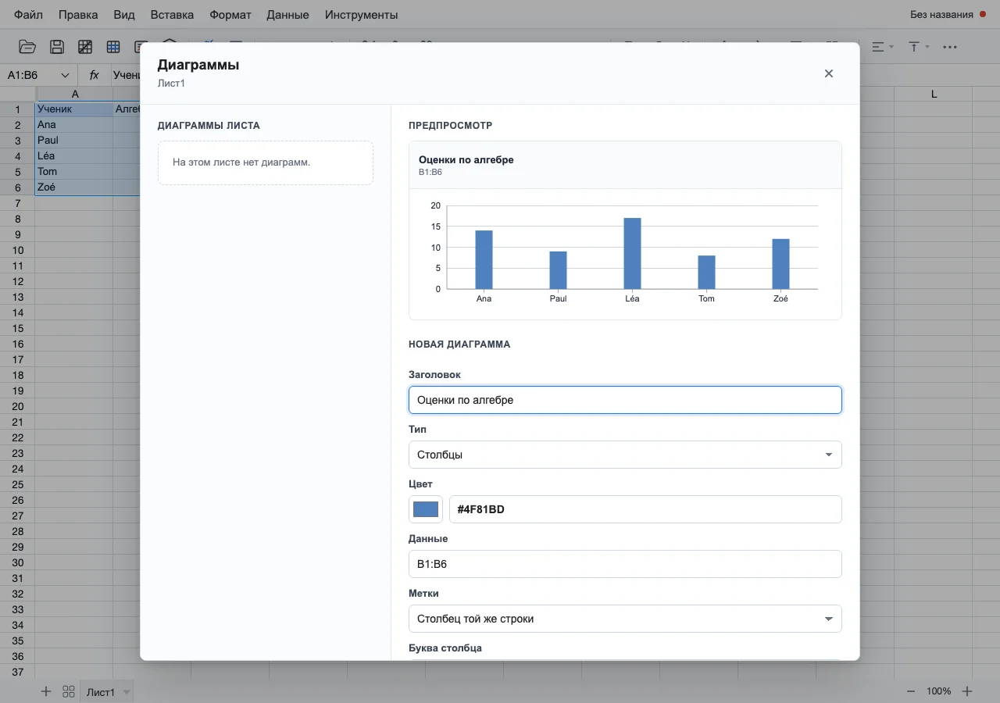
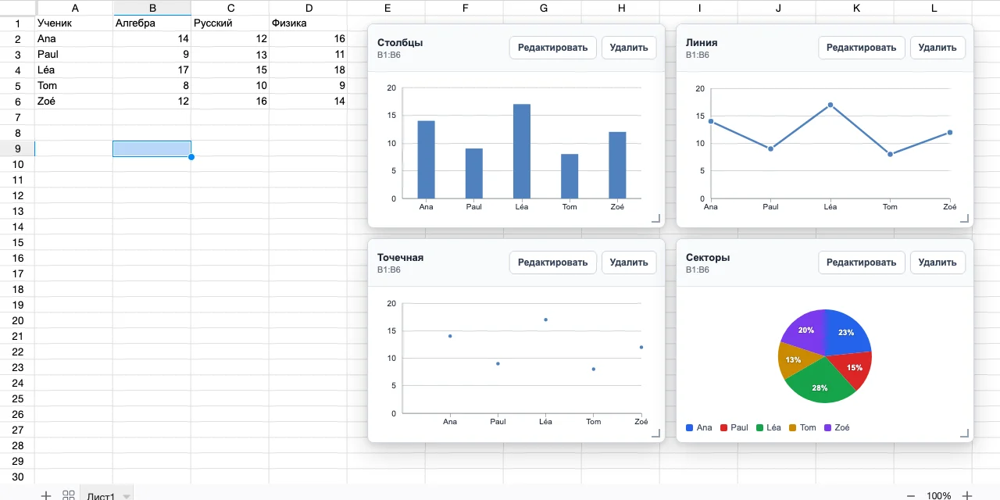
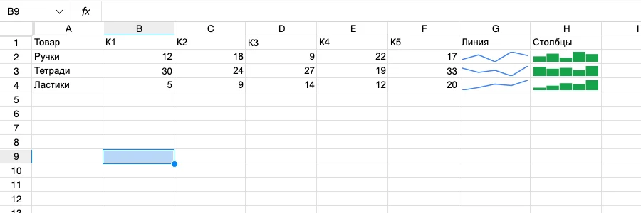

Диаграммы и спарклайны
Создание диаграммы
- Выделить данные.
- или Вставка › Вставить диаграмму.
- Выбрать тип и параметры; образец меняется сразу.
- Добавить, затем Закрыть.

| Выделено | Понимается как |
|---|---|
| столбец или строка чисел | данные |
| два столбца | подписи в первом, данные во втором |
| две строки | подписи в первой, данные во второй |
| два отдельных столбца, выбранные с Ctrl | то же |
Диаграмма показывает один ряд: строку или столбец данных. Ячейки без числа, например заголовок, пропускаются.
Типы
| Тип | Для чего | Подписи |
|---|---|---|
| Столбцы | сравнение | под столбиками |
| Линия | изменение | по оси абсцисс |
| Точечная | связь двух величин | это абсциссы, если они числа; иначе 1, 2, 3… |
| Секторы | доли; положительные значения | в легенде или на секторах |
До 120 значений, 24 для секторов.

Параметры
| Поле | Содержание |
|---|---|
| Заголовок | обязательно; показан вверху диаграммы |
| Цвет | выбор или код #4F81BD; у секторов свои цвета |
| Данные | диапазон: B2:B6 |
| Метки | Нет; Столбец той же строки (A); Строка тех же столбцов (1); Пользовательский диапазон, того же размера, что данные |
| Отображение | значения, легенда, абсциссы, ординаты, сетка |
Перемещение, изменение
- Потянув полосу заголовка, перемещают диаграмму; потянув правый нижний угол, меняют размер.
- Редактировать снова открывает окно, Удалить удаляет диаграмму. Окно также перечисляет все диаграммы листа.
- Диаграмма следует данным своих ячеек.
Диаграммы сохраняются в файле Excel как настоящие и снова читаются DocCells. С листом они не печатаются.
Спарклайны
Функция SPARKLINE рисует в ячейке миниатюрную диаграмму.
=SPARKLINE(B2:F2)
=SPARKLINE(B2:F2; {"charttype"\"column"})
=SPARKLINE(B2:F2; {"charttype"\"line"; "color"\"#dc2626"; "linewidth"\2})
=SPARKLINE(B2:F2; {"charttype"\"bar"; "max"\100})
Параметры пишут в фигурных скобках: имя, обратная косая черта, значение; между параметрами точка с запятой.
charttype | Рисунок | Свои параметры |
|---|---|---|
"line" (по умолчанию) | линия | color, linewidth, xmin, xmax, ymin, ymax |
"bar" | полосы с накоплением | max, color1, color2 |
"column" | столбики | color, negcolor, lowcolor, highcolor, firstcolor, lastcolor, axis, axiscolor, ymin, ymax |
"winloss" | выигрыши и проигрыши | те же, без ymin и ymax |
Общие параметры: empty ("zero" или "ignore"), nan ("convert" или "ignore"), rtl (справа налево). Документация SPARKLINE даёт все значения с примерами.
Для рисунка крупнее увеличьте строку и столбец или объедините ячейки.